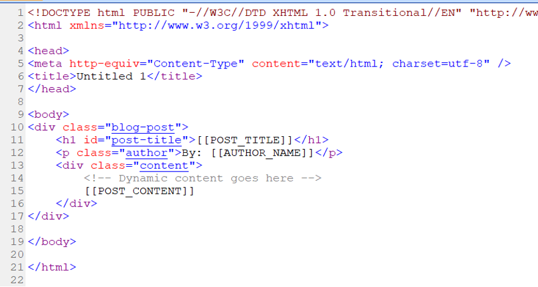
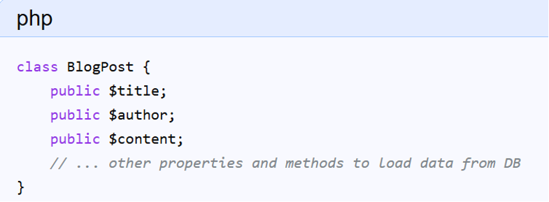
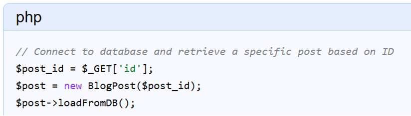
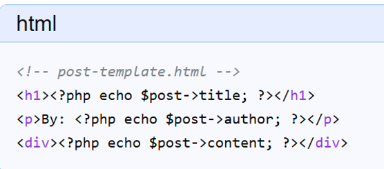

Content Templates
Creating web development content templates with dynamic data
1. Core Concepts of Content Templates
Definition
Creating web development content templates with dynamic data involves separating the presentation layer (HTML/CSS) from the data layer (database/API) and using a template engine or server-side scripting to merge them at runtime. A content template defines the fixed layout and structure of a page, using placeholders or variables to mark where dynamic content should be inserted.
Master Template
Master Template: Contains shared markup like the header, navigation menu, and footer, which remain the same across the site.
Page/Content Template: Defines the unique layout for specific content types (e.g., a blog post, a product page, a user profile).
Variables
Placeholders/Variables: These are special tags within the HTML that the rendering engine replaces with actual data. This keeps the design consistent across all dynamically generated pages.

2. Key Technologies
- Database: Stores structured data (e.g., MySQL, PostgreSQL, MongoDB).
- Server-Side Scripting: Languages like PHP, Python (Django/Flask), Node.js retrieve data and insert it into the template.
- Template Engines: Tools (e.g., Jinja2, EJS, Liquid) simplify the process of replacing placeholders and offer control structures like loops.
- Client-Side Scripting: JavaScript fetches data via APIs and updates parts of a page without a full reload (React, Vue.js).
3. Example Implementation (Conceptual PHP)
Render the Page: The server-side script loads the template file, replaces the PHP tags with the actual data, and sends the finished HTML page to the user's browser.



4. Best Practices
- Separate Content and Design: Allows designers and developers to work independently.
- Use Placeholders: Avoid hard-coding data for better maintainability.
- Ensure Responsiveness: Templates must adapt to different screen sizes.
- Validate Data: Prevent security vulnerabilities by validating all dynamic content.
- Utilize a CMS: Platforms like WordPress offer robust tools for managing template systems.
5. Emerging Trends in 2026
Agentic AI: Websites now use AI to automatically update content and layouts based on user behavior without manual input.
Real-Time Personalization: Systems adjust navigation and calls-to-action (CTAs) based on immediate on-page signals.
Astro & Qwik: Technologies like Qwik introduce "resumability," allowing apps to become interactive instantly. Astro uses "Islands Architecture" to keep content static for speed while hydrating only interactive parts.